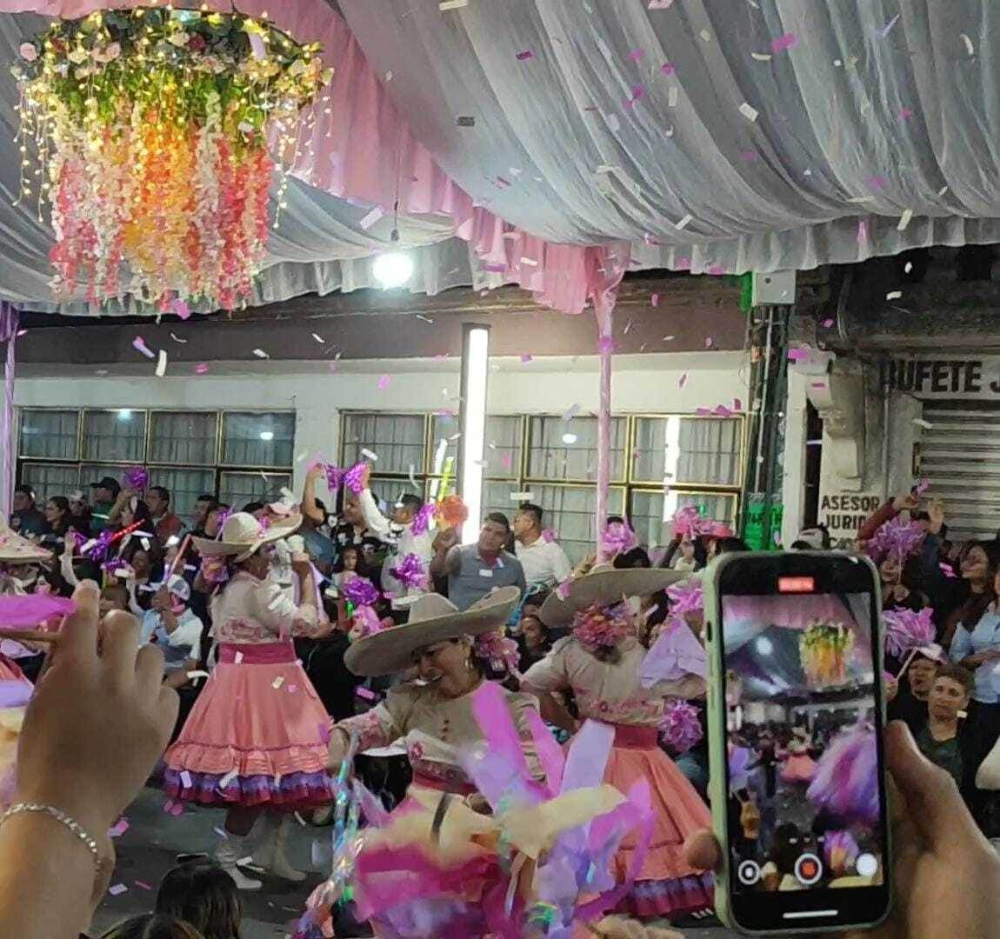

H I S T O R I A L A C A D É M I C O
"Sor Juana Ines de la Cruz" - Secundaria
2012 - 2015
Educación secundaria completa.
Cet 1 "Walter Cross Buchanan" – IPN
2015 - 2018
Técnico en Redes de Cómputo
Escuela Superior de Cómputo (ESCOM) – IPN
2018 – Dic. 2025
Ingeniería en Sistemas Computacionales
C O N T A C T O
Facebook: Joan Fek
Instagram: @joan_fek
Correo electrónico: kevinflorencioenriquez@gmail.com
WhatsApp: 5617650182
P A S A T I E M P O S F A V O R I T O S
Jugar fútbol
Soy defensa, me gusta jugar competitivamente y llevo un buen trayecto de varios campeonatos ganados.

Jugar Free Fire
Anteriormente era jugador semi-profesional del juego, competí en varios torneos internacionales y enfrenté muchos equipos profesionales.

Salir a eventos y planes sociales
Plazas, bailes, conciertos, fiestas, carnavales (Chimalhuacán)
D A T O S C U R I O S O S D E L A C R I P T O G R A F Í A
- 1943: El matemático Abraham Sinkov descubrió mensajes japoneses ocultos dentro de cifrados mexicanos. Bonus: los japoneses nunca supieron cómo se filtró su código. 🕵️♂️🔐
- Nggàm: Sistema secreto de los Bamileke de Camerún tallado en varillas. Aún indescifrado por los europeos y los lingüistas.
- 1921: Un espía ruso usó un dibujo de un gato con alas y tinta invisible para ocultar un mensaje secreto. Nadie sospechó nada por años.